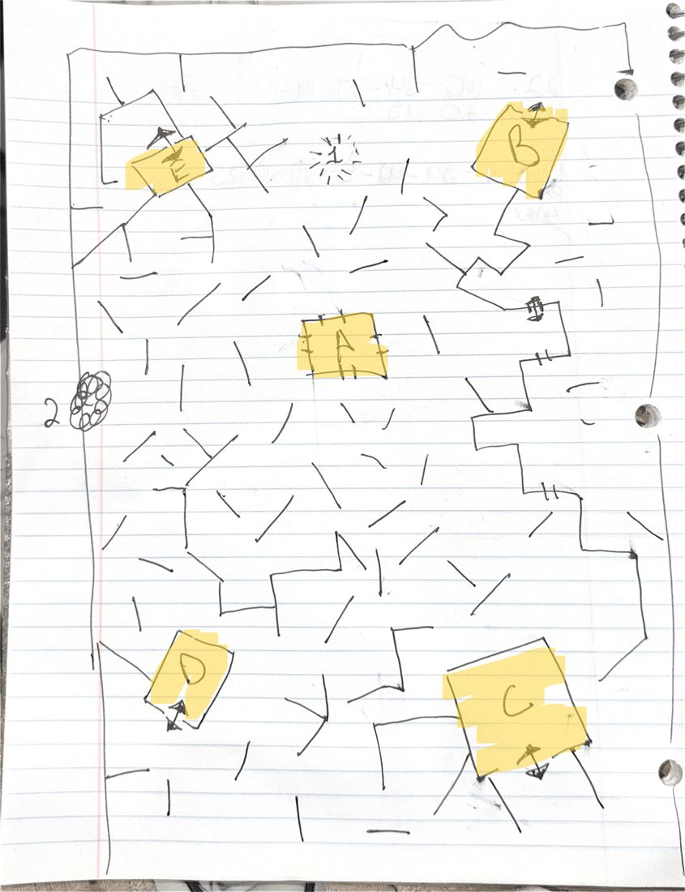

Gravedigger
GDD Revision 1
The first pitch was a first-person grave robber. Dig up a body, loot it, and its ghost rises with a favor to ask, like the Wayward Spirit favors in God of War (2018). Finish the favor and the ghost passes on. Ignore it and it escalates through phases: harmless, then a wandering zombie, then a Weeping Angel that only moves when you look away, then a "doorman" that drops you into a maze copy of the graveyard underground, and finally it kills you.
I listed five candidate favor types, to be trimmed to three. Looting borrowed R.E.P.O.'s levitating carry: one item at a time, stashed in a pile and wheeled out at the end of the night, so it feels like real grave robbing instead of an inventory screen. I looked at Risk of Rain 2's difficulty meter as a model for difficulty that climbs the longer you stay. I also wrote down the questions I hadn't answered yet, like whether digging should take time (more pressure, and room for upgrades) or be instant (so it never turns into a farming sim).
Core Loop
Escalation
Open Questions
Scrapped horror game
GDD Revision 2
The second revision moved to a frozen, sunless Earth. The player lives on a space station and comes down once a week for supplies, so the surface always feels like unknown territory. Two resources carry the tension: a cold meter that runs down outside the safe zones, and a radar that shows nearby monsters as blips but runs on batteries. Batteries can go from warm to frozen but not back, so the player gets fresh ones at every habitat. That gives me exact control over how much radar time the player has on each trip, and I expected it to be the decision players think about most.
The four ghosts come from this revision. I built each one on a Pac-Man ghost and its targeting rule: Blinky freezes while you look at it, Pinky cuts off your route, Inky is blind and works by scent and tendrils, and Clyde's real job is to make the player's radar go stale. The roster at the top of this page is this revision.
Resource Tension
Enemy AI
Pac-Man Ghosts
One enemy, one map
GDD Revision 3
Revision 3 opens with two scope rules for a 7-day jam: one enemy, and one map with several key locations instead of several small maps. I cut three of the four ghosts and kept Inky. Its tendrils extend over 10–15 seconds, hold for about 5, retract over 5–10, and stop at any barrier, so the player has two ways out: keep a wall between you and it, or stay out of range. The player stays crouched the whole time, moving slowly, and every step crunches in the snow.
The rest of the doc is written for the people building it. It lays out the tutorial beat by beat, from an Undertale-style opening crawl to a scripted death the first time the player steps outside, which teaches that this game is about escaping. Respawning unlocks the radar. Every habitat follows one template (airlock door, its station's machine, a chair to wait out the monster, no windows, a map on the wall, a battery shelf), and each habitat gets a section listing what you can interact with.
I drew the map by hand. The short lines are the ice-covered remains of building walls, which double as cover. The yellow rooms are the five habitats, #1 is a statue landmark, and #2 is a nest piled with bones.

Scope Cutting
Level Design
Tutorial Design